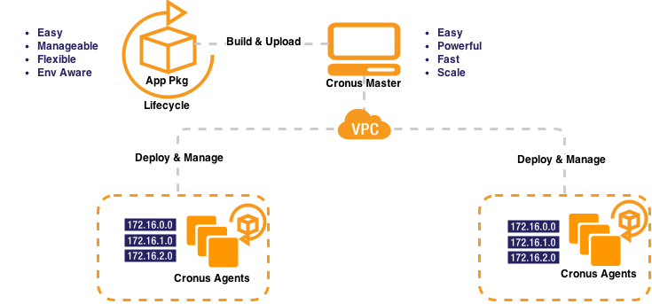

Differentiators
Manage Java, Python, Node, or ANY Language or Stack.
Deploy to Hundreds of Machines in Seconds.
No Vendor Lock In. Runs on GCP, AWS, Azure.
Light Weight, Deploy in 2 Minute.
Scale Simply and Predictably.
Intuitive UI, RESTful APIs
100% Open Source
Architecture

Setup and Deploy
Prerequisite
Setup
Deploy
On a linux machine with
- sudo access
- python > 2.6.7 && < 3.0
- openssl > 0.9.8
- wget
- system management daemon systemd or upstart
- unzip (CronusMaster only)
- java runtime >= 1.5 (CronusMaster only)
cd ~; wget -qO- 'http://www.stackscaling.com/downloads/install_cronusmaster' | bash
- CronusAgent is running at https://host:12020/agent
- CronusMaster is running at http://host:9000
- CronusMaster code is downloaded and saved in ~/cronusmaster-master
- In CronusMaster Homepage, run "Deploy a HelloWorld App"
- Check deployed application at http://host:8999